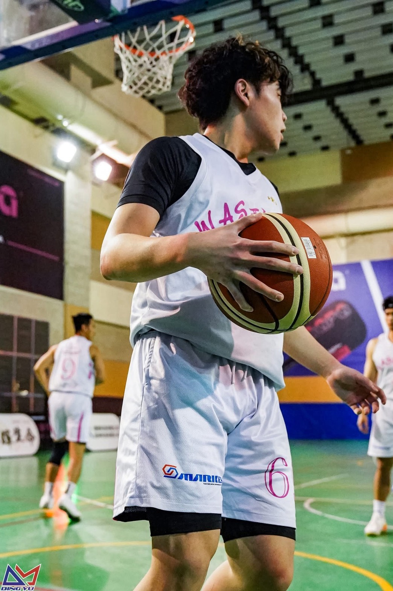

Basketball has become one of my favorite parts of the week. I play small forward about three times a week, usually with a different mix of teammates and opponents each time. Every game brings something new — a different matchup, a different rhythm, a different challenge.
Win or lose, what keeps me coming back is the process. I love the feeling of getting a little better each time I step on the court, and I love that basketball is something I get to share with friends. This site is a small collection of moments from some of my recent games.